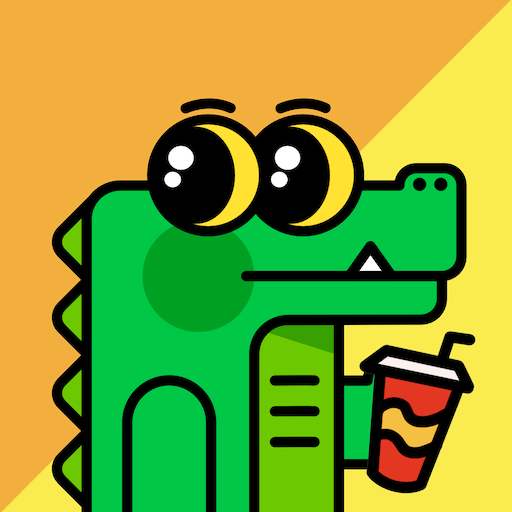
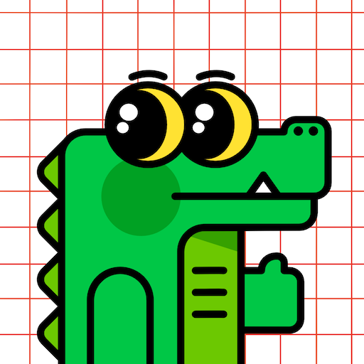

The Gators
Each gator is designed first to be a cute and unique avatar. The initial offering is completely available via this site for 1 XCH per character.

Later Gator #1
Price: 1 XCH
Later Gator #2
Price: 1 XCH
Later Gator #3
Price: 1 XCH
Later Gator #4
Price: 1 XCH

Later Gator #5
Price: 1 XCH
Later Gator #6
Price: 1 XCH
View All